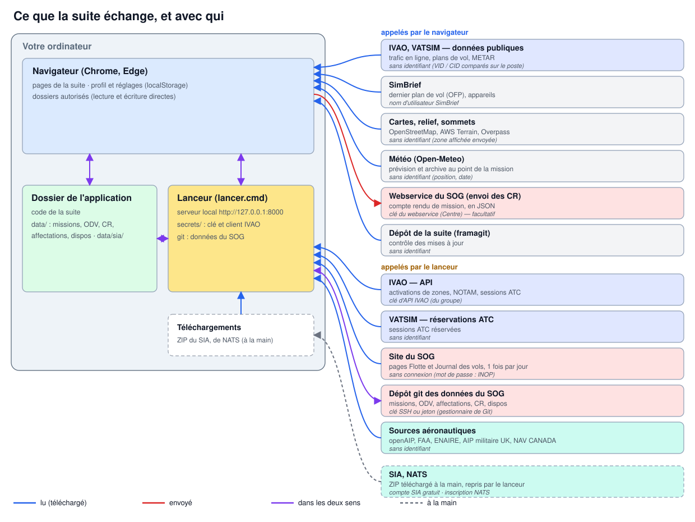
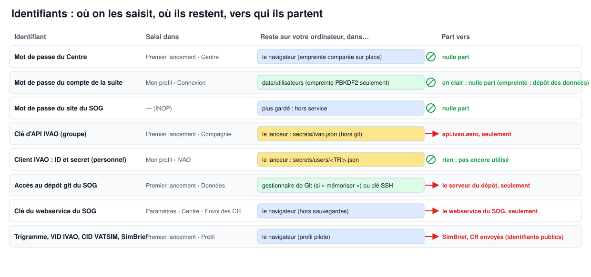

<!doctype html>
<html lang="fr">
<head>
<meta charset="utf-8">
<meta name="viewport" content="width=device-width, initial-scale=1">
<title>Installer la suite SOG</title>
<style>
:root{--bg:#f6f8fb;--paper:#fff;--ink:#1f2937;--sub:#4b5563;--line:#e5e7eb;--accent:#1d4ed8;--code:#f1f5f9;--th:#eef2f7}
@media (prefers-color-scheme:dark){:root:not([data-theme=light]){--bg:#0f141b;--paper:#161d27;--ink:#e5e7eb;--sub:#9ca3af;
--line:#2a3442;--accent:#7aa7ff;--code:#1e2733;--th:#1c2533}}
*{box-sizing:border-box}
body{margin:0;background:var(--bg);color:var(--ink);font:16px/1.6 "Segoe UI",Helvetica,Arial,sans-serif}
main{max-width:1000px;margin:0 auto;padding:28px 20px 60px;background:var(--paper);min-height:100vh}
h1{font-size:30px;line-height:1.25;margin:0 0 6px}
h2{font-size:23px;margin:38px 0 10px;padding-top:12px;border-top:1px solid var(--line)}
h3{font-size:18px;margin:26px 0 8px}
p,li{color:var(--ink)}
.lead{color:var(--sub);margin-top:0}
a{color:var(--accent)}
code{background:var(--code);padding:1px 5px;border-radius:4px;font-size:.9em}
pre{background:var(--code);padding:12px 14px;border-radius:8px;overflow:auto;font-size:13.5px;line-height:1.45}
pre code{background:none;padding:0}
figure{margin:16px 0 22px}
figure img{display:block;max-width:100%;height:auto;border:1px solid var(--line);border-radius:8px;background:#fff;
box-shadow:0 2px 10px rgba(0,0,0,.08)}
figcaption{font-size:13px;color:var(--sub);margin-top:6px}
.tbl{overflow-x:auto;margin:12px 0 20px}
table{border-collapse:collapse;width:100%;font-size:14.5px}
th,td{border:1px solid var(--line);padding:7px 9px;text-align:left;vertical-align:top}
th{background:var(--th)}
nav.toc{font-size:14px;background:var(--code);border-radius:8px;padding:10px 16px;margin:18px 0}
nav.toc ul{margin:4px 0;padding-left:18px}
.langbar{display:flex;justify-content:flex-end;align-items:center;gap:8px;font-size:14px;color:var(--sub);margin-bottom:6px}
.langbar select{font:inherit;padding:3px 6px;border:1px solid var(--line);border-radius:6px;background:var(--paper);color:var(--ink)}
@media (max-width:640px){main{padding:18px 16px 40px}h1{font-size:25px}}
</style>
</head>
<body>
<main>
<div class="langbar"><label for="lang">Langue</label><select id="lang" onchange="location.href=this.value"><option value="installation.fr.html" selected>Français</option><option value="installation.en.html">English</option></select></div>
<h1>Installer la suite SOG — tutoriel</h1>
<p class="lead"><em>SO Group Virtual (Virtual Special Operation Group) · version 4.10 · <a href="installation.en.html">English version</a></em></p>
<p>Dix minutes suffisent  on lance la suite, on suit les six étapes de la page <strong>Premier lancement</strong>, et chaque étape se coche dans le bilan en tête de page. Les captures de ce tutoriel viennent d'une installation neuve avec le jeu d'essai (pilote fictif ALF).</p>
<nav class="toc"><strong>Sommaire</strong><ul><li><a href="#1-comment-ça-marche">1. Comment ça marche</a></li><li><a href="#2-avant-de-commencer">2. Avant de commencer</a></li><li><a href="#3-installation-pas-à-pas">3. Installation pas à pas</a></li><li><a href="#4-réglages-complémentaires">4. Réglages complémentaires</a></li><li><a href="#5-en-cas-de-souci">5. En cas de souci</a></li></ul></nav>
<h2 id="1-comment-ça-marche">1. Comment ça marche</h2>
<p>La suite tourne <strong>entièrement sur votre ordinateur</strong>. Rien n'est hébergé chez un tiers </p>
<ul><li>le <strong>navigateur</strong> (Chrome ou Edge) affiche les pages et garde votre profil et vos réglages </li><li>le <strong>lanceur</strong> (<code>lancer.cmd</code>, ou <code>lancer.sh</code> sous macOS et Linux) sert ces pages sur <code>http://127.0.0.1</code> et se charge de ce que le navigateur ne peut pas faire seul  interroger un service qui demande une clé, lire un fichier de Téléchargements, synchroniser les données avec git </li><li>le <strong>dossier de l'application</strong> contient le code de la suite et, dans <code>data/</code>, les données du SOG (missions, ODV, affectations, comptes rendus, disponibilités) et les données aéronautiques (<code>data/sia/</code>).</li></ul>
<figure><a href="img/schema_echanges.fr.svg"></a><figcaption>Ce que la suite échange, et avec qui</figcaption></figure>
<p>Quelques services sont interrogés <strong>directement par le navigateur</strong>  ils sont publics et ne demandent pas d'identifiant (trafic IVAO et VATSIM, fonds de carte, relief, météo, SimBrief). Les autres passent <strong>par le lanceur</strong>  l'API IVAO (avec la clé du groupe), les réservations ATC de VATSIM, les pages Flotte et Journal des vols du site du SOG (lues une fois par jour, sans connexion), le dépôt git des données du SOG, et les sources aéronautiques téléchargeables (openAIP, FAA, ENAIRE, AIP militaire britannique, NAV CANADA). Deux sources se téléchargent à la main, parce qu'elles demandent un compte  le <strong>SIA</strong> (gratuit) et <strong>NATS</strong>  le lanceur reprend ensuite leurs ZIP dans le dossier Téléchargements.</p>
<h3 id="vos-identifiants-restent-chez-vous">Vos identifiants restent chez vous</h3>
<figure><a href="img/schema_identifiants.fr.svg"></a><figcaption>Identifiants : où on les saisit, où ils restent, vers qui ils partent</figcaption></figure>
<ul><li><strong>Les mots de passe sont gardés sur votre ordinateur et ne sont envoyés nulle part.</strong> Le mot de passe du Centre est vérifié dans le navigateur  celui de votre compte de la suite n'est jamais conservé en clair (seule son empreinte est gardée)  le mot de passe du site du SOG est <strong>hors service</strong> (INOP) tant que le SOG n'a pas de webservice.</li><li><strong>Une clé ne part que vers son propre service</strong>  la clé d'API IVAO vers <code>api.ivao.aero</code>, l'accès git vers le serveur du dépôt, la clé du webservice du SOG vers ce webservice. Les clés IVAO sont gardées par le lanceur (<code>secrets/</code>, jamais dans git, jamais dans les sauvegardes, jamais renvoyées à la page)  l'accès git par le gestionnaire d'identifiants de Git, si vous cochez « mémoriser .</li><li>Vos identifiants de réseau (VID IVAO, CID VATSIM) et SimBrief sont <strong>publics</strong>  ils servent à retrouver vos vols et vos plans de vol.</li></ul>
<h2 id="2-avant-de-commencer">2. Avant de commencer</h2>
<p>Rien n'est obligatoire pour découvrir la suite avec le jeu d'essai. Pour l'utiliser au sein du SOG, réunissez ce qui suit — <strong>demandez aux administrateurs du SOG</strong> ce qui est marqué « fourni par les admins .</p>
<h3 id="utilisateur">Utilisateur</h3>
<div class="tbl"><table><thead><tr><th>Élément</th><th>Où l'obtenir</th><th>Où le saisir</th><th></th></tr></thead><tbody><tr><td><strong>Trigramme</strong> (votre nom d'utilisateur SOG)</td><td>fourni par les admins du SOG</td><td>Premier lancement › Profil</td><td>conseillé</td></tr><tr><td><strong>Adresse du dépôt git du SOG</strong> et votre accès (clé SSH ou jeton)</td><td>fourni par les admins  une clé SSH se crée avec <code>ssh-keygen</code> puis se déclare sur le serveur du dépôt</td><td>Premier lancement › Données</td><td>conseillé</td></tr><tr><td><strong>VID IVAO</strong> et <strong>CID VATSIM</strong></td><td>vos comptes IVAO et VATSIM</td><td>Premier lancement › Profil</td><td>conseillé</td></tr><tr><td><strong>Nom d'utilisateur SimBrief</strong></td><td>votre compte SimBrief</td><td>Premier lancement › Profil</td><td>facultatif</td></tr><tr><td><strong>Client IVAO personnel</strong> (Client Credentials  <em>client ID</em> et <em>client secret</em>)</td><td>à créer sur <a href="https://developers.ivao.aero" rel="noopener">developers.ivao.aero</a>, à votre nom</td><td>Paramètres › Mon profil › IVAO</td><td>facultatif (fonction à venir)</td></tr><tr><td><strong>Compte SIA</strong></td><td>gratuit, sur le site du SIA (boutique)</td><td>— (téléchargement du ZIP)</td><td>conseillé</td></tr><tr><td><strong>Dossier d'X-Plane</strong></td><td>votre installation d'X-Plane</td><td>Données aéronautiques › X-Plane</td><td>facultatif</td></tr></tbody></table></div>
<h3 id="administrateur-du-sog-une-fois-pour-tout-le-groupe">Administrateur du SOG (une fois pour tout le groupe)</h3>
<div class="tbl"><table><thead><tr><th>Élément</th><th>Comment le créer</th><th>Où le saisir</th><th></th></tr></thead><tbody><tr><td><strong>Clé d'API IVAO</strong> du groupe</td><td>sur <a href="https://developers.ivao.aero" rel="noopener">developers.ivao.aero</a>, connecté avec un compte IVAO du SOG  créer une application et récupérer sa clé d'API (<em>API key</em>)  la transmettre aux membres</td><td>Premier lancement › Compagnie, ou Paramètres › Installation › Clés d'API</td><td>conseillé</td></tr><tr><td><strong>Dépôt git des données du SOG</strong></td><td>dépôt <strong>privé</strong> (framagit, gitnet…) créé par un admin  y pousser <code>data/</code>  donner un accès en lecture et écriture à chaque membre (clé SSH ou jeton)</td><td>Premier lancement › Données</td><td>conseillé</td></tr><tr><td><strong>Page « Flotte </strong> et <strong>page « Journal des vols </strong> du site du SOG</td><td>adresses du site (par défaut <code>https://flotte.defa-virtual.fr/flotte.php</code> et <code>/log_vols.php</code>)</td><td>Paramètres › Installation › Compagnie virtuelle</td><td>réglées par défaut</td></tr><tr><td><strong>Mot de passe du Centre</strong></td><td>fourni par les admins du SOG</td><td>Premier lancement › Centre</td><td>admins seulement</td></tr><tr><td><strong>Webservice du SOG</strong> (envoi des comptes rendus)</td><td>n'existe pas encore  le jour venu, une adresse et une clé d'API</td><td>Paramètres › Centre › Envoi des comptes rendus</td><td>à venir</td></tr></tbody></table></div>
<p>Chez IVAO, la clé et le client se créent depuis le portail des développeurs, réservé aux comptes IVAO  ses écrans peuvent changer. Pour un client personnel, déclarez chez IVAO l'<strong>adresse de redirection</strong> que la suite affiche dans Mon profil (par exemple <code>http://127.0.0.1:8000/__setup/ivao-callback</code>).</p>
<p><strong>Navigateur</strong>  Chrome ou Edge récents. Brave fonctionne après un réglage (voir <a href="../INSTALL.md">INSTALL.md</a>)  Firefox et Safari ne peuvent pas écrire dans un dossier.</p>
<h2 id="3-installation-pas-à-pas">3. Installation pas à pas</h2>
<h3 id="3-1-lancer-la-suite">3.1 Lancer la suite</h3>
<p>Décompressez l'archive de la suite où vous voulez (par exemple <code>E:\SOG</code>), puis double-cliquez sur **<code>lancer.cmd</code>** (Windows) — ou <code>sh lancer.sh</code> dans un terminal (macOS, Linux). Le lanceur installe Python s'il manque (avec votre accord), démarre le serveur local et ouvre la page <strong>Premier lancement</strong> </p>
<pre><code>X-Plane Web Suite — lanceur
Dossier : E:\SOG

1. Données (dossier data/)
  Données pas encore là : la page de premier lancement propose le jeu d’essai, l’adresse de votre dépôt de données
  ou l’archive reçue.
2. Serveur local
  Suite servie sur http://127.0.0.1:8000/
3. Navigateur
  http://127.0.0.1:8000/apps/settings/premier_lancement.html</code></pre>
<p>Laissez cette fenêtre ouverte pendant l'utilisation  la fermer arrête la suite.</p>
<figure><a href="img/01_page.fr.png"></a><figcaption>Page Premier lancement</figcaption></figure>
<p>Le <strong>bilan</strong> en tête de page montre ce qui est fait (✓), ce qui reste à faire (○) et ce qui est facultatif (–). Chaque ligne mène à son étape  on peut y revenir à tout moment par Paramètres › Premier lancement.</p>
<figure><a href="img/02_bilan.fr.png"></a><figcaption>Bilan</figcaption></figure>
<h3 id="3-2-étape-1-dossier-de-l-application">3.2 Étape 1 — Dossier de l'application</h3>
<p>Tout le reste est grisé tant que ce dossier n'est pas choisi  la suite doit pouvoir lire et écrire ses données.</p>
<figure><a href="img/04_verrou.fr.png"></a><figcaption>Étapes verrouillées</figcaption></figure>
<p>Cliquez sur <strong>Choisir le dossier de l'application</strong> et désignez le dossier qui contient <code>lancer.cmd</code>. Chrome demande l'autorisation de modifier les fichiers de ce dossier  <strong>Autoriser</strong> (choisissez « Autoriser à chaque visite  si Chrome le propose  il ne la redemandera plus).</p>
<figure><a href="img/03_dossiers.fr.png"></a><figcaption>Choisir le dossier</figcaption></figure>
<figure><a href="img/05_autorisation_chrome.png"></a><figcaption>Autorisation de Chrome</figcaption></figure>
<figure><a href="img/06_dossier_ok.fr.png"></a><figcaption>Dossier choisi</figcaption></figure>
<p>Si le dossier désigné est celui d'une <strong>autre copie</strong> de la suite, la page le signale (« Suite lancée depuis …, dossier déclaré … )  choisissez celui de la copie que vous venez de lancer. Après un redémarrage, Chrome peut redemander l'accès  un clic sur <strong>Autoriser à nouveau</strong> suffit.</p>
<h3 id="3-3-étape-2-données">3.3 Étape 2 — Données</h3>
<figure><a href="img/07_donnees.fr.png"></a><figcaption>Données</figcaption></figure>
<p>Trois possibilités </p>
<ul><li><strong>Jeu d'essai</strong>  des données fictives pour découvrir la suite (12 missions, 4 pilotes, des disponibilités et des affectations datées). À remplacer plus tard par celles du SOG.</li><li><strong>Dépôt de données</strong>  l'adresse du dépôt git du SOG (<code>https://…</code> ou <code>git@…</code>), fournie par les admins, puis <strong>Récupérer les données</strong>. En HTTPS, l'identifiant et le mot de passe ou jeton ne servent qu'au téléchargement  « mémoriser  les confie au gestionnaire d'identifiants de Git. En SSH, c'est la clé SSH de l'ordinateur qui sert.</li><li><strong>Archive reçue par mail</strong>  le <code>.zip</code> des données.</li></ul>
<figure><a href="img/08_donnees_ok.fr.png"></a><figcaption>Données installées</figcaption></figure>
<p>Le <strong>dépôt git de synchronisation</strong> (facultatif) partage ensuite les données entre les postes, par le bouton <strong>Synchroniser</strong> de l'en-tête.</p>
<h3 id="3-4-étape-3-compagnie">3.4 Étape 3 — Compagnie</h3>
<figure><a href="img/09_compagnie.fr.png"></a><figcaption>Compagnie</figcaption></figure>
<p>Le nom de la compagnie et l'adresse de son site sont déjà réglés pour le SOG. La <strong>clé d'API IVAO</strong> (fournie par les admins) permet d'importer les activations de zones et les sessions ATC d'IVAO dans le Tableau et le Planning ODV  sans elle, on les saisit à la main. Elle est gardée par le lanceur et n'est jamais réaffichée (seuls ses 4 derniers caractères).</p>
<h3 id="3-5-étape-4-profil">3.5 Étape 4 — Profil</h3>
<figure><a href="img/11_profil_rempli.fr.png"></a><figcaption>Profil rempli</figcaption></figure>
<p>Votre <strong>trigramme</strong>, votre <strong>VID IVAO</strong>, votre <strong>CID VATSIM</strong>, votre nom d'utilisateur <strong>SimBrief</strong>, et votre <strong>identifiant</strong> sur le site du SOG. La suite ne demande jamais vos mots de passe IVAO ou VATSIM. Le <strong>mot de passe du site du SOG</strong> est hors service (<strong>INOP</strong>)  il n'est ni demandé ni gardé tant que le SOG n'a pas de webservice.</p>
<h3 id="3-6-étape-5-données-aéronautiques">3.6 Étape 5 — Données aéronautiques</h3>
<p>Les cartes, le studio et la planification utilisent les données aéronautiques (cycle AIRAC). Sur la carte, <strong>cliquez sur les pays voulus</strong> (un clic les ajoute, un autre les retire), puis <strong>Activer</strong>  la suite télécharge leurs sources, reconstruit la base aéronautique et calcule la MORA. La France est choisie par défaut.</p>
<figure><a href="img/14_aero_carte.fr.png"></a><figcaption>Carte des pays</figcaption></figure>
<figure><a href="img/16_activer_jauge.fr.png"></a><figcaption>Activer : la suite enchaîne</figcaption></figure>
<p>Ce qui ne peut pas se faire seul est listé sous la carte, <strong>Actions à faire</strong> </p>
<figure><a href="img/18_aero_reste.fr.png"></a><figcaption>Actions à faire</figcaption></figure>
<ul><li><strong>SIA</strong>  commander le cycle en cours sur la boutique du SIA (compte gratuit, produit à 0 €), télécharger le ZIP, puis <strong>Prendre le dernier ZIP</strong> — le lanceur le prend dans Téléchargements (s'il y est déjà, « Activer  le prend seul) </li><li><strong>DIRCAM</strong> (axes de ravitaillement)  télécharger le PDF de la MILAIP (ENR 5.7), puis <strong>Importer le PDF</strong> </li><li><strong>X-Plane</strong> (facultatif)  <strong>Choisir le dossier</strong> d'installation d'X-Plane.</li></ul>
<figure><a href="img/19_aero_base.fr.png"></a><figcaption>Base aéronautique</figcaption></figure>
<h3 id="3-7-étape-6-centre-administrateurs">3.7 Étape 6 — Centre (administrateurs)</h3>
<p>Le Centre (génération des missions, studio cartographique, registre, Tableau, Planning ODV) est réservé  il s'active par le mot de passe du Centre, fourni par les admins.</p>
<figure><a href="img/12_centre.fr.png"></a><figcaption>Centre verrouillé</figcaption></figure>
<figure><a href="img/20_centre_activation.fr.png"></a><figcaption>Activer le Centre</figcaption></figure>
<p>Une fois activé, l'étape propose la mise à jour de la flotte et du journal depuis le site du SOG, les missions du registre et les réglages du SOG.</p>
<figure><a href="img/21_centre_etape.fr.png"></a><figcaption>Centre activé</figcaption></figure>
<h3 id="3-8-terminer">3.8 Terminer</h3>
<p>Quand le bilan est au vert pour ce qui vous concerne, cliquez sur <strong>Terminer</strong>  la suite s'ouvre désormais sur l'accueil, avec un bandeau tant qu'il reste quelque chose à régler.</p>
<figure><a href="img/22_bilan_fin.fr.png"></a><figcaption>Bilan final</figcaption></figure>
<h2 id="4-réglages-complémentaires">4. Réglages complémentaires</h2>
<h3 id="mon-profil">Mon profil</h3>
<p>Le compte sur le site du SOG (identifiant  mot de passe INOP) et le <strong>client IVAO personnel</strong>  <em>client ID</em>, <em>client secret</em>, et l'adresse de redirection à déclarer chez IVAO.</p>
<figure><a href="img/30_profil_site.fr.png"></a><figcaption>Site du SOG</figcaption></figure>
<figure><a href="img/31_profil_ivao.fr.png"></a><figcaption>Client IVAO</figcaption></figure>
<h3 id="installation">Installation</h3>
<p><strong>Sources externes</strong> (adresses du site du SOG, du SIA, de la DIRCAM…), <strong>Clés d'API</strong> (IVAO, pour toute l'installation) et <strong>Compagnie virtuelle</strong> (noms et pages du site  Flotte, Journal des vols).</p>
<figure><a href="img/32_install_sources.fr.png"></a><figcaption>Sources externes</figcaption></figure>
<figure><a href="img/33_install_cles.fr.png"></a><figcaption>Clés d&#x27;API</figcaption></figure>
<figure><a href="img/34_install_compagnie.fr.png"></a><figcaption>Compagnie virtuelle</figcaption></figure>
<h3 id="centre-administrateurs">Centre (administrateurs)</h3>
<p><strong>Utilisateurs et droits</strong>, <strong>Envoi des comptes rendus</strong> (adresse et clé du webservice du SOG, le jour où il existera) et <strong>Flotte</strong>.</p>
<figure><a href="img/36_centre_utilisateurs.fr.png"></a><figcaption>Utilisateurs</figcaption></figure>
<figure><a href="img/37_centre_envoi.fr.png"></a><figcaption>Envoi des comptes rendus</figcaption></figure>
<h2 id="5-en-cas-de-souci">5. En cas de souci</h2>
<div class="tbl"><table><thead><tr><th>Symptôme</th><th>Que faire</th></tr></thead><tbody><tr><td>Tout est grisé</td><td>Étape 1  choisir le dossier de l'application, ou <strong>Autoriser à nouveau</strong></td></tr><tr><td>« Suite lancée depuis …, dossier déclaré … </td><td>Le dossier choisi est celui d'une autre copie  choisir celui de la suite lancée</td></tr><tr><td>« dossier SIA non autorisé </td><td>Redonner l'accès au dossier de l'application (étape 1)</td></tr><tr><td>La page ne s'ouvre pas</td><td>Vérifier que la fenêtre du lanceur est ouverte  ouvrir l'adresse qu'il affiche</td></tr><tr><td>Une ancienne version reste affichée</td><td>Ctrl+F5</td></tr></tbody></table></div>
<p>Pour aller plus loin  <a href="../MANUEL_UTILISATEUR.md">Manuel utilisateur</a>, <a href="../MANUEL_ADMINISTRATEUR.md">Manuel administrateur</a>, <a href="../INSTALL.md">Installation détaillée</a>.</p>
</main>
</body>
</html>
